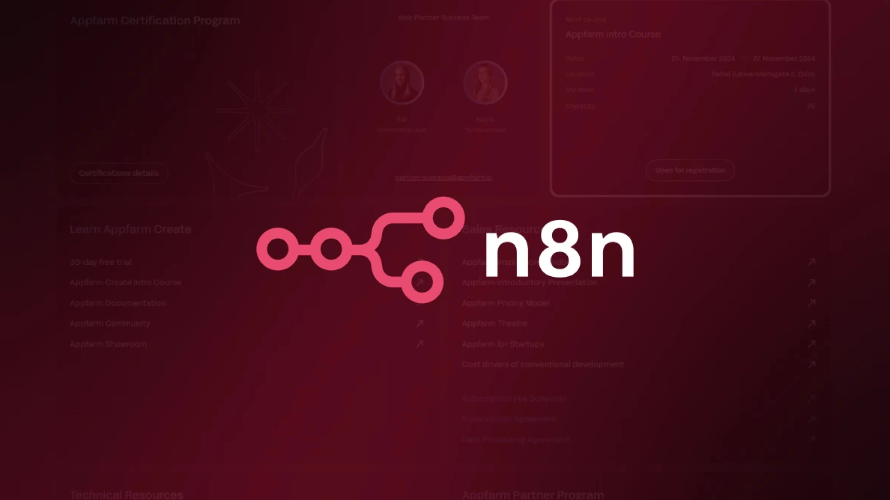
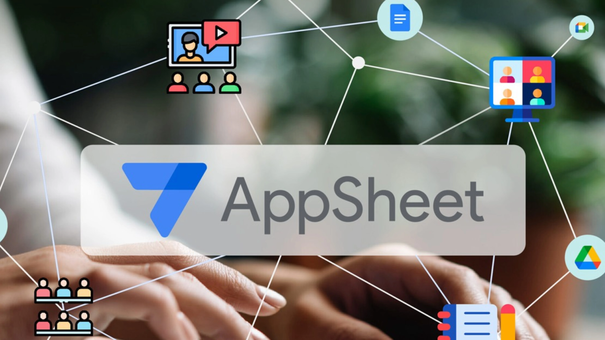
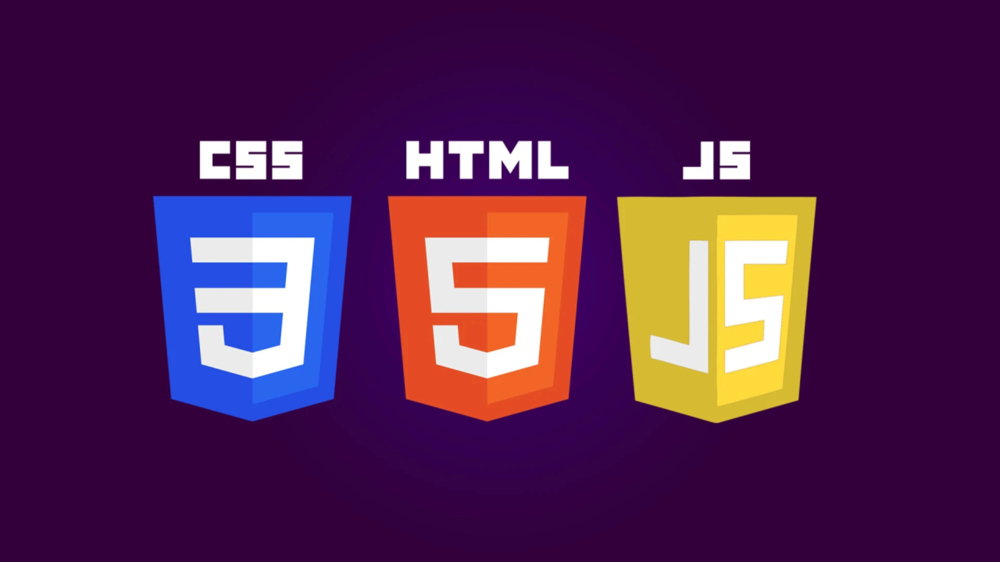

Karya & Project Saya
Berikut adalah kumpulan proyek yang pernah saya kerjakan, baik untuk eksplorasi pribadi, hobi, maupun tugas kuliah.

Automation AI Agent Whatsapp
Mengotomatisasi balasan dengan AI Agent di WhatsApp menggunakan n8n untuk meningkatkan responsivitas.
Lihat Hasil

Appsheet Inventory Management
Membangun aplikasi inventaris gudang dengan Appsheet untuk efisiensi dan mengurangi kesalahan data.
Lihat Hasil

Website Portofolio Pribadi
Merancang website portofolio ini dari nol untuk menampilkan karya saya secara profesional.
Lihat Kode